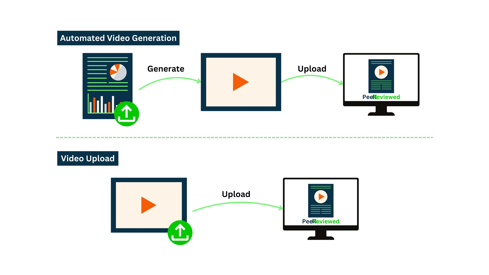

Creating Videos from Papers
Create allows academics and researchers to generate video content for conferences, journals, and social media. Users can easily use the provided resources and our AI-driven tools to create videos from research papers, enhancing the academic dissemination process.
Submitting Your Research Video
Prepare your video ensuring it meets our submission guidelines, including format, length, and content relevance to academic research.
- Upload Your Video: Navigate to the submission section, and upload your video file. Provide a brief description, select relevant tags, and link it to the corresponding research paper or article.
- Review Process: Once submitted, your video will undergo a review process to ensure it meets academic standards and quality benchmarks.
- Publication: After approval, your video will be published on the CiteEcho platform, making it accessible to a global audience of academics and researchers.
Generating Videos with CiteEcho
Upload your research paper or input key findings, and our AI-driven tool will automatically create a draft video.
- Customization: Review the generated video and use our editing tools to make adjustments, add visuals, or incorporate additional information to better convey your research.
- Final Review and Submission: Once you are satisfied with the video, submit it for a quick review to ensure compliance with our content standards.
- Publishing: After the review, your video will be published on CiteEcho, ready to be viewed and shared with the academic community.